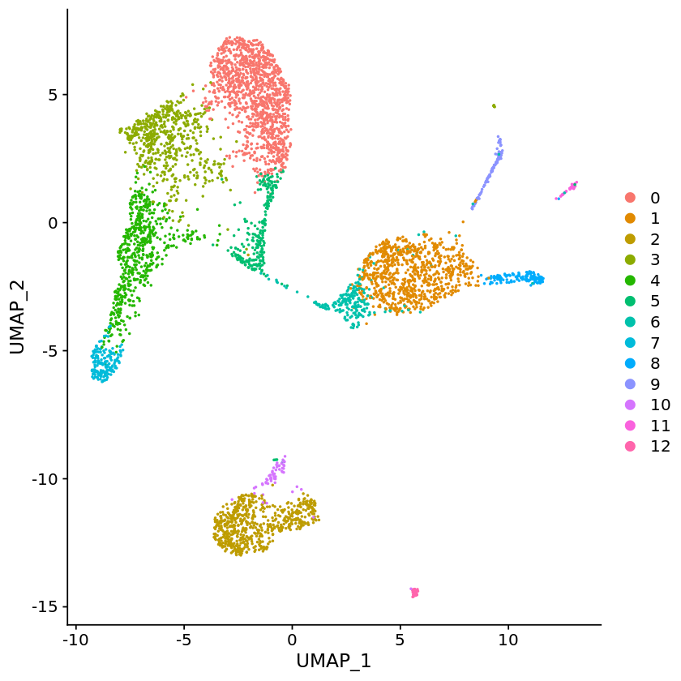

# Seurat v3.0.0 and tximport >=1.13.10
library(Seurat)
library(tximport)
# path to the output directory of Alevin run of pbmc_1k 10x V2 data
files <- file.path("alevin_quants/alevin/quants_mat.gz")
file.exists(files)
"TRUE"
# Reading in the alevin quants quants
txi <- tximport(files, type="alevin")
"and we are good to go !! Cells after this has been taken from Seurat tutorial:
https://satijalab.org/seurat/v3.0/pbmc3k_tutorial.html
Below lines are for example purposes only and could be suboptimal. We recommend
checking out Seurat tool for more detailed tutorial of the downstream analysis."
pbmc <- CreateSeuratObject(counts = txi$counts , min.cells = 3, min.features = 200, project = "10X_PBMC")
pbmc <- NormalizeData(pbmc, normalization.method = "LogNormalize", scale.factor = 10000)
pbmc <- FindVariableFeatures(pbmc, selection.method = "vst", nfeatures = 2000)
all.genes <- rownames(pbmc)
pbmc <- ScaleData(pbmc, features = all.genes)
pbmc <- RunPCA(pbmc, features = VariableFeatures(object = pbmc))
pbmc <- FindNeighbors(pbmc, dims = 1:10)
pbmc <- FindClusters(pbmc, resolution = 0.5)
pbmc <- RunUMAP(pbmc, dims = 1:10)
DimPlot(pbmc, reduction = "umap")
